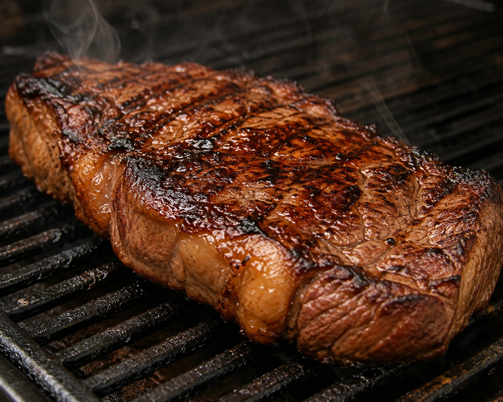
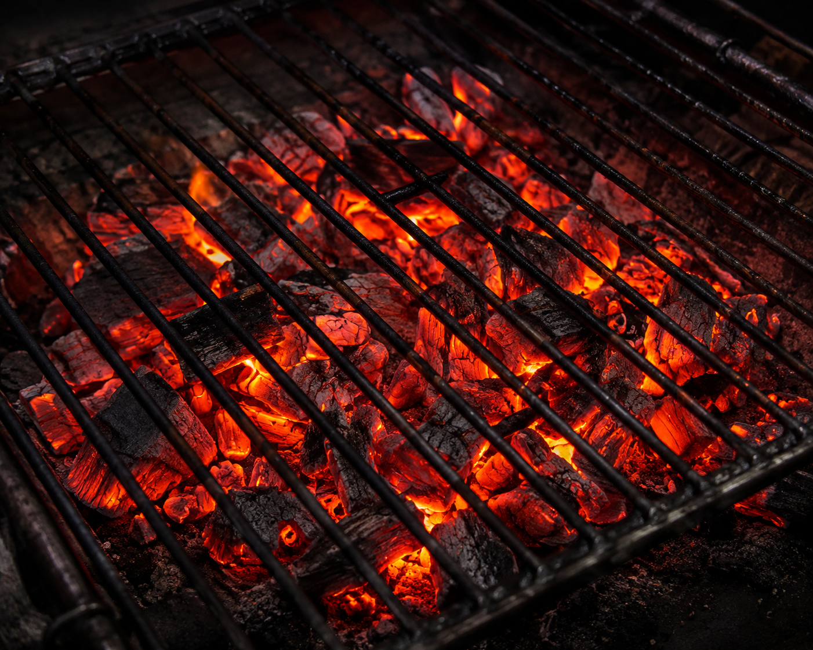
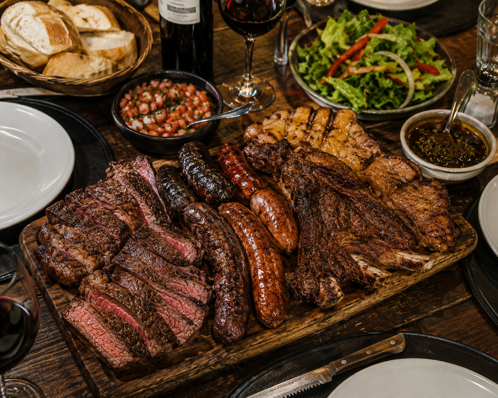
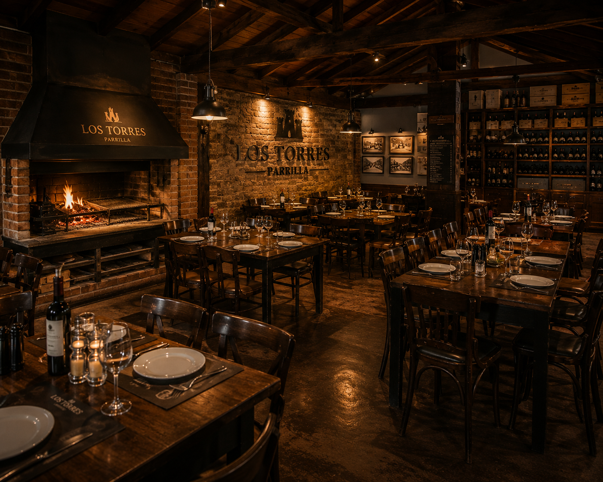
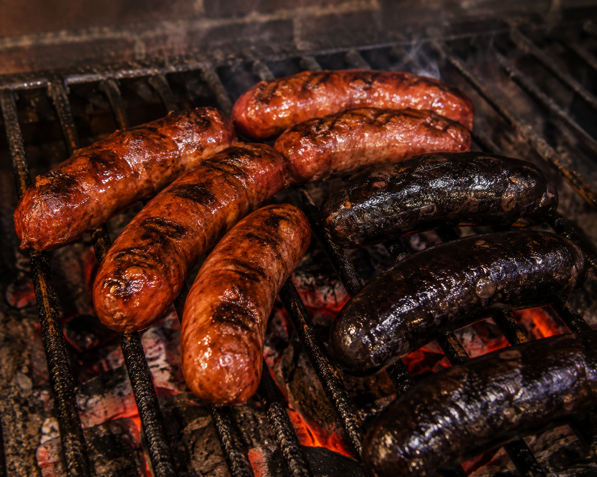
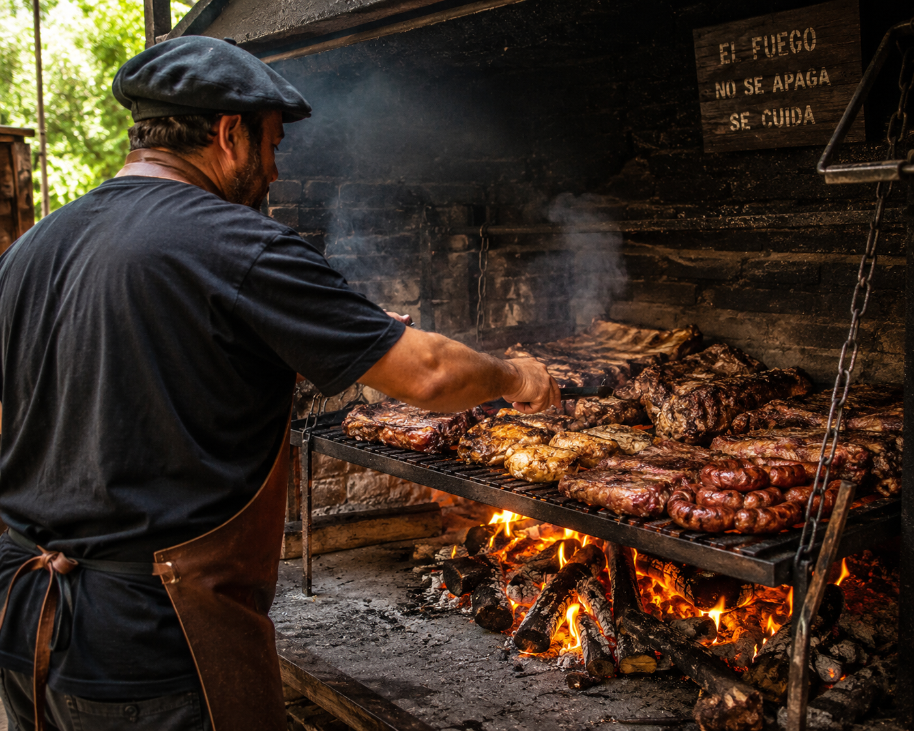
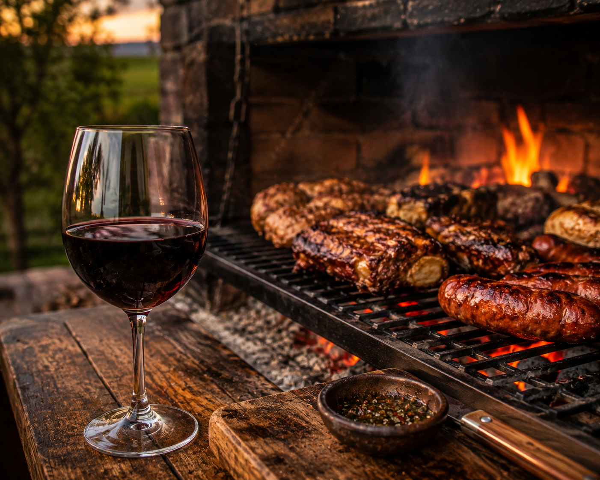
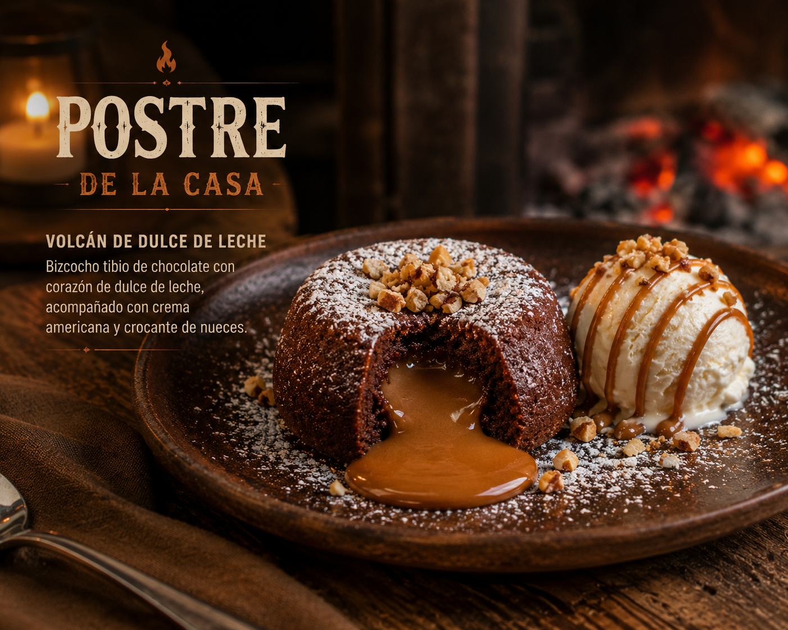

Cocido a punto sobre brasas de leña, con el dorado justo.

El fuego de leña que le da el sabor caracteristico a nuestras carnes, cocinadas a la parrilla.

Selección de cortes y achuras, ideal para compartir en la mesa.

Ambiente cálido y acogedor, ideal para disfrutar de una comida en pareja o en familia.

Chorizo, morcilla y achuras seleccionadas, cocinadas a la parrilla con el sabor característico de Los Torres.

Nuestro parrillero, con años de experiencia, asegura que cada corte salga a la perfección.

La combinación perfecta: un buen corte de carne acompañado de un vino seleccionado de nuestra bodega.

Finalizá tu comida con un postre casero, preparado con ingredientes frescos y de calidad.